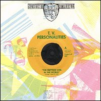
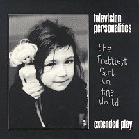

Television Personalities |
 1987 - Constrictor - Single Coll. 003 - 7" Songs: The Prettiest Girl In The World If That's What Love Is
The Constrictor Singles Series. Collector's item only. Every new record limited
to 1000 copies or less. You will recognize the different products by looking
at the labels. |
 1994[?] - Overground - OVER38 - 7" Songs: The Prettiest Girl In The World Miracles Take Longer If That's What Love Is Apples And Oranges (Syd Barrett)
tracks 1 and 3 previously released as a limited edition of 2000 on constrictor
records, germany in 1987 - track 2 previously released on the shelter benefit
"let's try another guest house" in 1987 - track 4 previously released on
the syd barrett tribute "beyond the wildwood" in 1987 - photography by alison
wonderland |